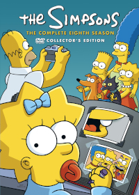
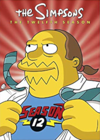
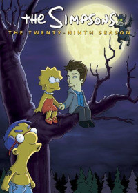

<!-- Simpsons -->


<html>

<header>
    <title> The Simpsons </title>
    <meta charset="UTF-8">
    <link rel="stylesheet" href="../../../styles/default.css">

    <div class="navbar">
      <div class="name">
        BereaFlix
      </div>
      <nav>
        <ul>
          <li><a href="../../../index.html">Home</a></li>
          <li><a href="../../../collection/anime/anime.html">Anime</a></li>
          <li><a href="../../../collection/movies/movies.html">Movies</a></li>
          <li><a href="../tv.html">TV Shows</a></li>
        </ul>
      </nav>
    </div>
</header>
<br><br><br><br><br>

<!-- S0 -->
<a href="../media/The Simpsons/The Simpsons S00 (360p)">

</a>

<!-- S1 -->
<a href="../media/The Simpsons/The Simpsons S01 (360p)">

</a>


<!-- S2 -->
<a href="../media/The Simpsons/The Simpsons S02 (360p)">

</a>

<!-- S3 -->
<a href="../media/The Simpsons/The Simpsons S03 (360p)">

</a>

<!-- S4 -->
<a href="../media/The Simpsons/The Simpsons S04 (360p)">

</a>


<!-- S5 -->
<a href="../media/The Simpsons/The Simpsons S05 (360p)">

</a>

<!-- S6 -->
<a href="../media/The Simpsons/The Simpsons S06 (360p)">

</a>


<!-- S7 -->
<a href="../media/The Simpsons/The Simpsons S07 (360p)">

</a>

<!-- S8 -->
<a href="../media/The Simpsons/The Simpsons S08 (360p)">

</a>

<!-- S9 -->
<a href="../media/The Simpsons/The Simpsons S09 (360p)">

</a>

<!-- S10 -->
<a href="../media/The Simpsons/The Simpsons S10 (360p)">

</a>

<!-- S11 -->
<a href="../media/The Simpsons/The Simpsons S11 (360p)">

</a>


<!-- S12 -->
<a href="../media/The Simpsons/The Simpsons S12 (360p)">

</a>

<!-- S13 -->
<a href="../media/The Simpsons/The Simpsons S13 (360p)">

</a>

<!-- S14 -->
<a href="../media/The Simpsons/The Simpsons S14 (360p)">

</a>

<!-- S15 -->
<a href="../media/The Simpsons/The Simpsons S15 (360p)">

</a>

<!-- S16 -->
<a href="../media/The Simpsons/The Simpsons S16 (360p)">

</a>


<!-- S17 -->
<a href="../media/The Simpsons/The Simpsons S17 (360p)">

</a>

<!-- S18 -->
<a href="../media/The Simpsons/The Simpsons S18 (360p)">

</a>

<!-- S19 -->
<a href="../media/The Simpsons/The Simpsons S19 (360p)">

</a>
<!-- S20 -->
<a href="../media/The Simpsons/The Simpsons S20 (360p)">

</a>

<!-- S21 -->
<a href="../media/The Simpsons/The Simpsons S21 (360p)">

</a>


<!-- S22 -->
<a href="../media/The Simpsons/The Simpsons S22 (360p)">

</a>

<!-- S23 -->
<a href="../media/The Simpsons/The Simpsons S23 (360p)">

</a>

<!-- S24 -->
<a href="../media/The Simpsons/The Simpsons S24 (360p)">

</a>
<!-- S25 -->
<a href="../media/The Simpsons/The Simpsons S25 (360p)">

</a>

<!-- S26 -->
<a href="../media/The Simpsons/The Simpsons S26 (360p)">

</a>


<!-- S27 -->
<a href="../media/The Simpsons/The Simpsons S27 (360p)">

</a>

<!-- S28 -->
<a href="../media/The Simpsons/The Simpsons S28 (360p)">

</a>

<!-- S29 -->
<a href="../media/The Simpsons/The Simpsons S29 (360p)">

</a>

</html>
